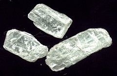
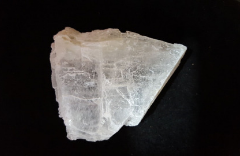
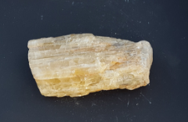
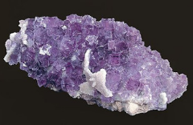
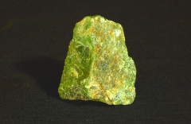
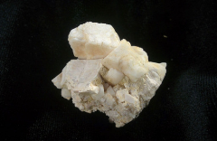
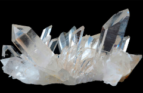
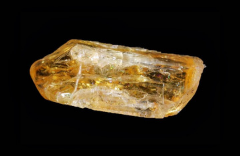
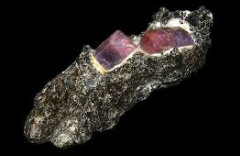
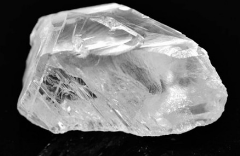

| Dureza | Imagen | Mineral | Se raya con/raya a | Composición química |
|---|---|---|---|---|
| 1 |  | Talco |
Se raya fácilmente con la uña | Mg3Si4O10(OH)2 |
2 |
 | Yeso |
Se raya con la uña, con más dificultad | CaSO4·2H2O |
3 |
 | Calcita |
Se puede rayar con una moneda de cobre |
CaCO3 |
4 |
 | Fluorita |
Se puede rayar con cuchillo de acero |
CaF2 |
5 |
 | Apatito |
No se raya fácilmente con un cuchillo | Ca5(PO4)3(OH-,Cl,,F,)l |
6 |
 | Ortosa |
Se raya con una lija para el acero | KAlSi3O8 |
7 |
 | Cuarzo |
Raya el vidrio | SiO2 |
8 |
 | Topacio |
Rayado por herramientas de carburo de wolframio |
Al2SiO4(OH-,F-)2 |
9 |
 | Corindón |
Rayado por herramientas de carburo de silicio |
Al2O3 |
10 |
 | Diamante |
El material más duro de la escala. Solo rayado por otro diamante |
C |